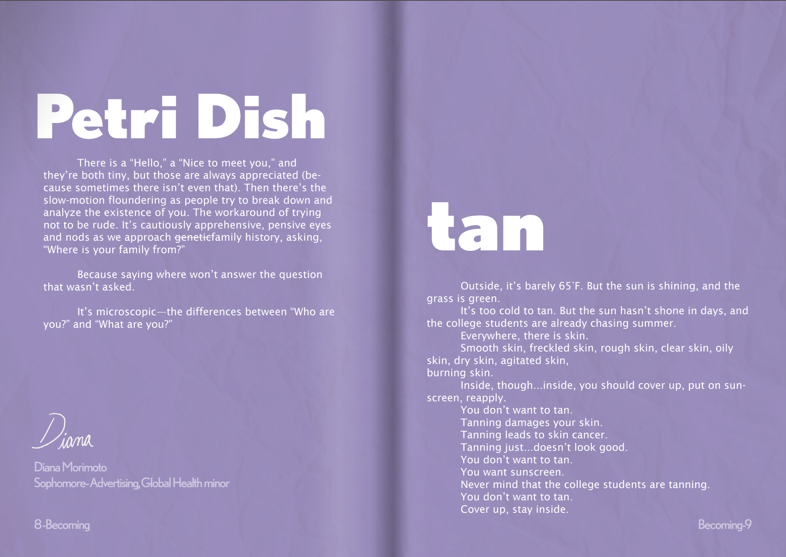
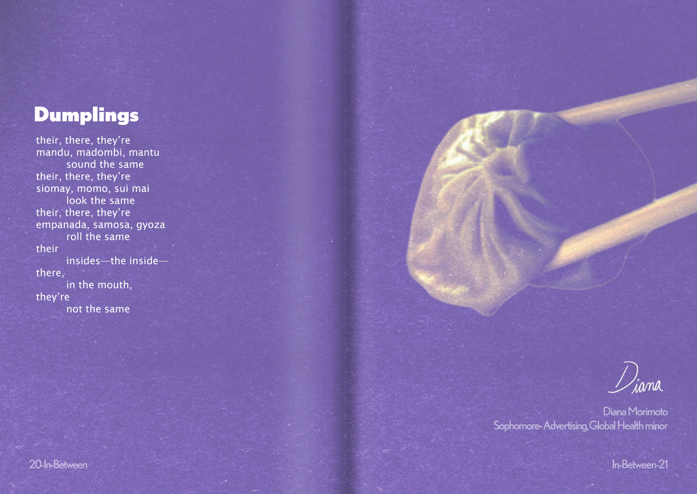
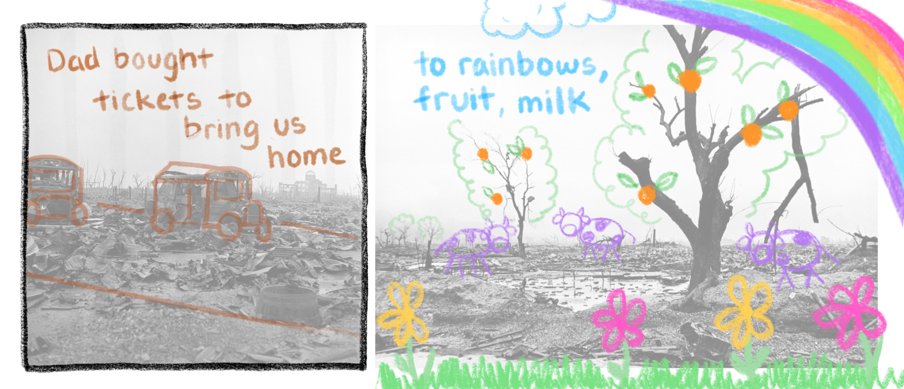

Mock Pinterest Campaign


I coded the website you are currently viewing using HTML, CSS, and Javascript. I am always working on updating my portfolio, especially the Boba page (so parts of it might be missing some text).
In winter of 2026, I directed a zine featuring original manual and digital artwork and written works from student members of Taking Up Space. I have three works, "Petri Dish," "tan," and "Dumplings," included in the zine.


Google Doc of essay
Download PDF of essay
Thanks to a nomination from my professor, Betsy Wheeler, I was awarded the Stephen Swig Essay Prize from the UO in spring 2025.
Stephen Swig Essay Prize
In this essay, I examine the intersection between race, sexuality, and disability in healthcare.
Using Vivian Chong’s graphic memoir Dancing After TEN as a case study, I examined the intersection of race, gender, and impairments in Western medical systems and how certain bodies have been systematically neglected, objectified, and abused.
Chong's identity as Asian, a woman, and an impaired person changes how the healthcare system interacts with her and people with similar identities, particularly as mental health takes begun to take to the forefront of how we understand "health."

This is my remaking of the legacy of Hiroshima. We associate Hiroshima with "atomic bomb," "destruction," "devestation," and "war;" images like the original photographs above may come to mind. When we think of Hiroshima, we think of the deaths: the death toll, the death count, the number of deaths. By turning people into numbers and defining them by their death, taking from them their lives as much as the physical attack did.
My intention in remaking Bernard Hoffman’s photographs of Hiroshima was to remind the audience that the victims should be defined by their lives, not their deaths. My artwork is loosely based on my grandfather’s experience leaving Hiroshima for the U.S. in the aftermath of the attack.